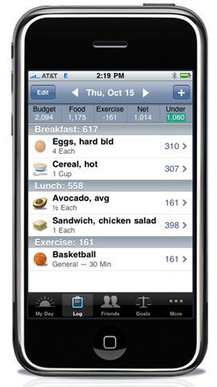

It’s been a while!
12/6/2009
Yes, it has been a while. Hopefully everyone is off to a good start to their holidays, as I am.
I’ve been heads down for the last several months, working on Lose It!. Well, I finally shipped the 2.0 version that has been consuming all of my time. It’s been great to watch the adoption of the new version and the user excitement that goes with many of the new features. This is the kind of paragraph that is immensely rewarding for folks who really try to make great software:

The amount of polish on Lose It’s website is a reflection of the amount of polish in the app itself. Both the Lose It! site and app work together seamlessly to give you as clear an idea as possible about your exercise and eating trends. Considering the amount of work that must have gone into it, it’s amazing that t his all comes at no charge. If you’re looking for a way to help you lose weight, I’d unconditionally recommend downloading Lose It! from the app store and setting up an account with their site.
It’s also been great to get my chops at running an online service back- I have been in the world of client software for a number of years, but web applications are my roots, and Lose It! has finally brought me back to those roots. We’re running the service completely virtually and taking advantage of as many cloud services as we can. At the root of this is Amazon Web Services, of course, but we’re complementing AWS with Stax, a service which has served as the foundation for our data and services, and a good one. Running an online service has really changed since I last did it- the demand on the service is so much higher, but so are all the tools available. It’s been great…
I’ve been immensely busy, and it looks like it won’t let up through the holidays. I’m already working on another smaller update to Lose It!. There is a ton of interest and activity in what we’re up to FitNow, so I’ll do my best to keep everyone posted when I have time. As always, you can follow me on Twitter at @dragonstyle, though my updates there are few and far between, still.
You can follow Lose It! on Twitter at @loseitapp or become a fan on Facebook at http://www.facebook.com/loseitapp.